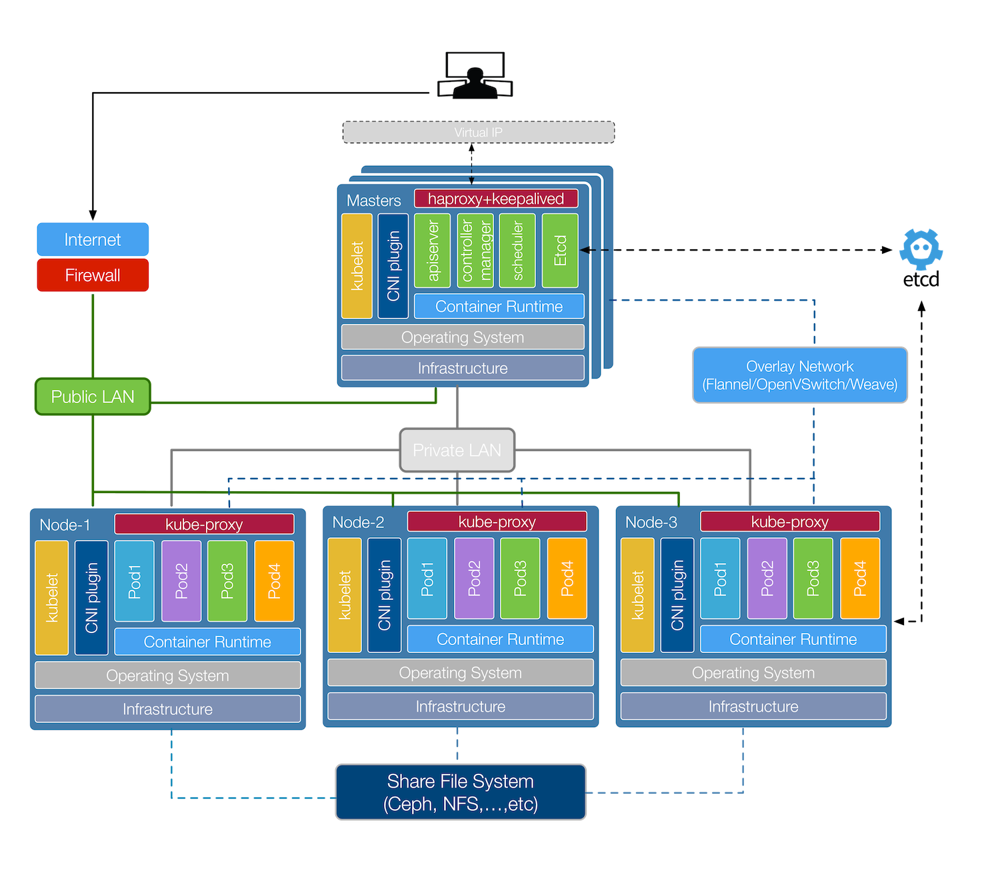
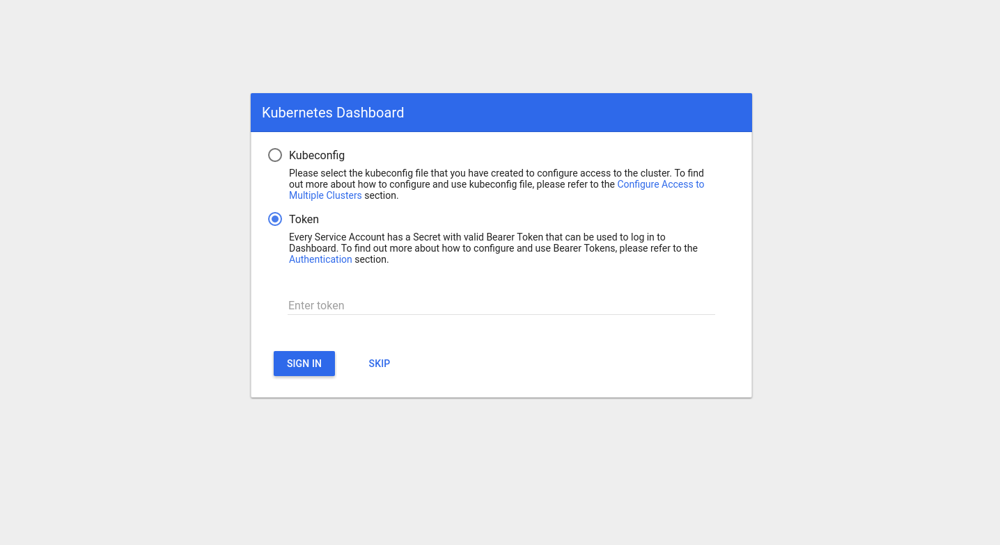

高可用（离线版无etcd证书）K8S v1.12.3版本部署
此版本安装不需要连外网，所有配置文件及镜像均来自内网habor：
172.16.24.66;
适用于3(master)+3(node)模式，以及3节点master、node重叠模式；
本次实验以master、node重叠模式举例
1. 环境介绍及说明
本文命令除了升级内核及安装依赖包以外，其他所有命令都在第一个master节点k8s-m1机器上执行
- 版本说明：
- Kubernetes v1.12.3
- CNI v0.7.1
- Etcd v3.3.9
- Flannel v0.10.0 或者 Calico v3.1.3
- Docker CE latest version(18.09)
兼容k8s v1.12.1和v1.12.3；
不建议用docker 18.05 , docker CE 18.05有bind mount的bug
- 网络信息：
- Cluster IP CIDR: 10.244.0.0/16
- Service Cluster IP CIDR: 10.96.0.0/12
- Service DNS IP: 10.96.0.10
- DNS DN: cluster.local
- Kubernetes API VIP: 10.21.198.109
- Kubernetes Ingress VIP: 10.21.198.147

- 节点信息：
| IP | HostName | CPU | Memory |
|---|---|---|---|
| 10.21.198.106 | K8S-M1 | 4 | 8G |
| 10.21.198.119 | K8S-M2 | 4 | 8G |
| 10.21.198.126 | K8S-M3 | 4 | 8G |
VIP为
10.21.198.109，由所有master节点的keepalived+haproxy来选择VIP的归属保持高可用
2. 基础配置及准备
注意：该节操作需要所有节点都执行
- 修改hostname：
hostnamectl set-hostname k8s-m1 - 各节点配置hosts：
cat > /etc/hosts <<EOF
127.0.0.1 localhost localhost.localdomain localhost4 localhost4.localdomain4
::1 localhost localhost.localdomain localhost6 localhost6.localdomain6
10.21.198.106 k8s-m1
10.21.198.119 k8s-m2
10.21.198.126 k8s-m3
EOF- k8s-m1节点到其他节点互信：
ssh-keygen -f /root/.ssh/id_rsa -N ''
for host in k8s-m1 k8s-m2 k8s-m3;
do
ssh-copy-id -i ~/.ssh/id_rsa.pub $host;
done- 关闭防火墙与SELinux
若不关闭，后续K8S 挂载目录时可能报错
Permission denied
systemctl disable --now firewalld NetworkManager
setenforce 0
sed -ri '/^[^#]*SELINUX=/s#=.+$#=disabled#' /etc/selinux/config- 关闭 dnsmasq (可选)
linux 系统开启了 dnsmasq 后(如 GUI 环境)，将系统 DNS Server 设置为 127.0.0.1，这会导致 docker 容器无法解析域名，需要关闭它
systemctl disable --now dnsmasq- 关闭swap
Kubernetes v1.8+要求关闭系统Swap,若不关闭则需要修改kubelet设定参数( –fail-swap-on 设置为 false 来忽略 swap on),在所有机器使用以下指令关闭swap并注释掉/etc/fstab中swap的行：
swapoff -a && sysctl -w vm.swappiness=0
sed -ri '/^[^#]*swap/s@^@#@' /etc/fstab- 升级系统
yum install epel-release -y
yum install wget git jq psmisc -y
# 下面这步暂时略过，且没发现什么问题
# yum update -y --exclude=kernel*- 升级内核
此步骤可以略过，先跳到安装ipvs步骤。目前因为没有经过业务测试，暂未发现问题
因为目前市面上包管理下内核版本会很低,安装docker后无论centos还是ubuntu会有如下bug,4.15的内核依然存在：kernel:unregister_netdevice: waiting for lo to become free. Usage count = 1
# 安装perl内核依赖
[ ! -f /usr/bin/perl ] && yum install perl -y
# 导入elrepo的key并安装 elrepo 源
rpm --import https://www.elrepo.org/RPM-GPG-KEY-elrepo.org
rpm -Uvh http://www.elrepo.org/elrepo-release-7.0-2.el7.elrepo.noarch.rpm
# 查看可用的内核
yum --disablerepo="*" --enablerepo="elrepo-kernel" list available --showduplicates注意：ipvs依赖于nf_conntrack_ipv4内核模块,4.19包括之后内核里改名为nf_conntrack,但是kube-proxy的代码里没有加判断一直用的nf_conntrack_ipv4,所以这里安装4.18版本的内核；
详情参考：https://github.com/Lentil1016/kubeadm-ha/issues/19
export Kernel_Version=4.18.9-1
wget http://mirror.rc.usf.edu/compute_lock/elrepo/kernel/el7/x86_64/RPMS/kernel-ml{,-devel}-${Kernel_Version}.el7.elrepo.x86_64.rpm
rpm -Uvh kernel-ml*
# 检查这个内核里是否有这个内核模块
find /lib/modules -name '*nf_conntrack_ipv4*' -type f
# 修改内核启动顺序,默认启动的顺序应该为1,升级以后内核是往前面插入,为0
grub2-set-default 0 && grub2-mkconfig -o /etc/grub2.cfg
# 确认下是否启动默认内核指向上面安装的内核
grubby --default-kernel
# 重启加载新内核
reboot
# 测试加载模块
modprobe nf_conntrack_ipv4- 所有机器安装ipvs(1.11后使用ipvs,性能甩iptables几条街)
yum install ipvsadm ipset sysstat conntrack libseccomp wget -y- 所有机器选择需要开机加载的内核模块,以下是 ipvs 模式需要加载的模块并设置开机自动加载
# 创建
:> /etc/modules-load.d/ipvs.conf
module=(
ip_vs
ip_vs_lc
ip_vs_wlc
ip_vs_rr
ip_vs_wrr
ip_vs_lblc
ip_vs_lblcr
ip_vs_dh
ip_vs_sh
ip_vs_fo
ip_vs_nq
ip_vs_sed
ip_vs_ftp
)
for kernel_module in ${module[@]}
do
/sbin/modinfo -F filename $kernel_module |& grep -qv ERROR && echo $kernel_module >> /etc/modules-load.d/ipvs.conf || :
done
# 启动并设置自启
systemctl enable --now systemd-modules-load.service- 所有机器需要设定/etc/sysctl.d/k8s.conf的系统参数
cat <<EOF > /etc/sysctl.d/k8s.conf
net.ipv4.ip_forward = 1
net.bridge.bridge-nf-call-ip6tables = 1
net.bridge.bridge-nf-call-iptables = 1
fs.may_detach_mounts = 1
vm.overcommit_memory=1
vm.panic_on_oom=0
fs.inotify.max_user_watches=89100
fs.file-max=52706963
fs.nr_open=52706963
net.netfilter.nf_conntrack_max=2310720
EOF
sysctl --system- 所有机器需要安装Docker CE
此处利用docker的官方安装脚本来安装一次来添加repo,然后查询可用的docker版本,选择你要安装的k8s版本支持的docker版本即可
curl -fsSL "https://get.docker.com/" | bash -s -- --mirror Aliyun && yum autoremove docker-ce -y
yum install -y docker-ce- 所有机器配置加速源
mkdir -p /etc/docker/
cat>/etc/docker/daemon.json<<EOF
{
"registry-mirrors": ["https://docker.mirrors.ustc.edu.cn"]
}
EOF- 设置docker开机启动及命令补全
yum install -y epel-release bash-completion && cp /usr/share/bash-completion/completions/docker /etc/bash_completion.d/
systemctl enable --now docker- 设置ntp
yum install -y ntpdate
# 设置每分钟同步
cat <<"EOF" >> /var/spool/cron/root
*/1 * * * * /usr/sbin/ntpdate -u cn.pool.ntp.org >> /var/log/ntpdate.log 2>&1
EOF- 在k8s-m1上声明变量
因为后续全部会在k8s-m1节点上操作，将所需的变量提前写到一个文件里，后续只要source一下，就可以通用地使用后续命令；
注意3节点（master和node重合）版本只需将node ip写成master ip即可。
cluster.source
# 声明集群成员信息
declare -A MasterArray otherMaster NodeArray
MasterArray=(['k8s-m1']=10.21.198.106 ['k8s-m2']=10.21.198.119 ['k8s-m3']=10.21.198.126)
otherMaster=(['k8s-m2']=10.21.198.119 ['k8s-m3']=10.21.198.126)
NodeArray=(['k8s-n1']=10.21.198.106 ['k8s-n2']=10.21.198.119 ['k8s-n3']=10.21.198.126)
export VIP=10.21.198.109
export INGRESS_VIP=10.130.224.10
[ "${#MasterArray[@]}" -eq 1 ] && export VIP=${MasterArray[@]} || export API_PORT=8443
export KUBE_APISERVER=https://${VIP}:${API_PORT:-6443}
#声明需要安装的的k8s版本
export KUBE_VERSION=v1.12.3
# 网卡名
export interface=eth0
export K8S_DIR=/etc/kubernetes
export PKI_DIR=${K8S_DIR}/pki
export ETCD_SSL=/etc/etcd/ssl
export MANIFESTS_DIR=/etc/kubernetes/manifests/
# cni
export CNI_URL="https://github.com/containernetworking/plugins/releases/download"
export CNI_VERSION=v0.7.1
# cfssl
export CFSSL_URL="https://pkg.cfssl.org/R1.2"
# etcd
export ETCD_version=v3.3.9- 配置docker harbor
因为后续所有的二进制文件、镜像等都是从公司内部docker harbor中拉取的，故需要在k8s-m1上进行相关配置（如需权限，请联系harbor管理员）；
此举可以避免翻墙下载包的问题，但有时异地传输镜像速度很慢，目前已有无锡、深圳两个harbor环境；
该harbor证书的获取查看附件。
for NODE in "${MasterArray[@]}"; do
echo "--- $NODE ${MasterArray[$NODE]} ---"
ssh ${NODE} "mkdir -p /etc/docker/certs.d/172.16.24.66/"
scp ca.crt ${NODE}:/etc/docker/certs.d/172.16.24.66/
done- k8s-m1上下载二进制包
# 下载镜像
docker pull 172.16.24.66/k8s-v1.11.3/k8s-bin-full-no-etcdca:v1.12.3
# 开启容器并设置9600秒后删除
docker run --rm -d --name temp 172.16.24.66/k8s-v1.11.3/k8s-bin-full-no-etcdca:v1.12.3 sleep 9600
# 拷贝所需文件
cd ~
docker cp temp:/kubernetes-bin/kubernetes-server-linux-amd64.tar.gz .
# 解压
tar -zxvf kubernetes-server-linux-amd64.tar.gz --strip-components=3 -C /usr/local/bin kubernetes/server/bin/kube{let,ctl,-apiserver,-controller-manager,-scheduler,-proxy}- k8s-m1上分发master相关组件到其他master上
for NODE in "${!otherMaster[@]}"; do
echo "--- $NODE ${otherMaster[$NODE]} ---"
scp /usr/local/bin/kube{let,ctl,-apiserver,-controller-manager,-scheduler,-proxy} ${otherMaster[$NODE]}:/usr/local/bin/
done- k8s-m1上分发node的kubernetes二进制文件
for NODE in "${!NodeArray[@]}"; do
echo "--- $NODE ${NodeArray[$NODE]} ---"
scp /usr/local/bin/kube{let,-proxy} ${NodeArray[$NODE]}:/usr/local/bin/
done- k8s-m1上下载Kubernetes CNI 二进制文件并分发
mkdir -p /opt/cni/bin
docker cp temp:/kubernetes-cni/cni-plugins-amd64-v0.7.1.tgz .
tar -zxvf cni-plugins-amd64-v0.7.1.tgz -C /opt/cni/bin
# 分发cni文件到各master
for NODE in "${!otherMaster[@]}"; do
echo "--- $NODE ${otherMaster[$NODE]} ---"
ssh ${otherMaster[$NODE]} 'mkdir -p /opt/cni/bin'
scp /opt/cni/bin/* ${otherMaster[$NODE]}:/opt/cni/bin/
done- k8s-m1上安装CFSSL工具，用來建立 TLS Certificates
docker cp temp:/kubernetes-cfssl/cfssl /usr/local/bin/
docker cp temp:/kubernetes-cfssl/cfssljson /usr/local/bin/- k8s-m1上获取后续部署相关配置文件
已将所有相关配置文件放置gerrit上，包括制作证书需要的json文件及部署插件相关的yml文件等
cd ~
docker cp temp:/k8s-manual-files .3. 建立集群CA keys 与Certificates
此节需要生成多个组件的Certificates，包括Etcd、Kubernetes等，每个集群都会有一个根数位凭证认证机构(Root Certificate Authority)被用在认证API Server 与Kubelet 端的凭证。
CA JSON档的CN(Common Name)与O(Organization)等内容是会影响Kubernetes组件认证的。
CN Common Name, apiserver 会从证书中提取该字段作为请求的用户名 (User Name)
O Organization, apiserver 会从证书中提取该字段作为请求用户所属的组 (Group)
CA (Certificate Authority) 是自签名的根证书，用来签名后续创建的其它证书。
- Etcd组件CA
Etcd：用来保存集群所有状态的 Key/Value 存储系统,所有 Kubernetes 组件会通过 API Server 来跟 Etcd 进行沟通从而保存或读取资源状态。
本文etcd跑在3台master节点上。
- Etcd 二进制文件
cd ~/k8s-manual-files
docker cp temp:/kubernetes-etcd/etcd-v3.3.9-linux-amd64.tar.gz .
# 解压至目录
tar -zxvf etcd-v3.3.9-linux-amd64.tar.gz --strip-components=1 -C /usr/local/bin etcd-${ETCD_version}-linux-amd64/etcd{,ctl}
# 分发etcd的二进制文件到其他master上
for NODE in "${!otherMaster[@]}"; do
echo "--- $NODE ${otherMaster[$NODE]} ---"
scp /usr/local/bin/etcd* ${otherMaster[$NODE]}:/usr/local/bin/
done
# 修改etcd配置文件
cd ~/k8s-manual-files/master/
etcd_servers=$( xargs -n1<<<${MasterArray[@]} | sort | sed 's#^#http://#;s#$#:2379#;$s#\n##' | paste -d, -s - )
etcd_initial_cluster=$( for i in ${!MasterArray[@]};do echo $i=http://${MasterArray[$i]}:2380; done | sort | paste -d, -s - )
sed -ri "/initial-cluster:/s#'.+'#'${etcd_initial_cluster}'#" etc/etcd/config.yml
# 分发systemd和配置文件至所有master节点
for NODE in "${!MasterArray[@]}"; do
echo "--- $NODE ${MasterArray[$NODE]} ---"
ssh ${MasterArray[$NODE]} "mkdir -p $MANIFESTS_DIR /etc/etcd /var/lib/etcd"
scp systemd/etcd.service ${MasterArray[$NODE]}:/usr/lib/systemd/system/etcd.service
scp etc/etcd/config.yml ${MasterArray[$NODE]}:/etc/etcd/etcd.config.yml
ssh ${MasterArray[$NODE]} "sed -i "s/{HOSTNAME}/$NODE/g" /etc/etcd/etcd.config.yml"
ssh ${MasterArray[$NODE]} "sed -i "s/{PUBLIC_IP}/${MasterArray[$NODE]}/g" /etc/etcd/etcd.config.yml"
ssh ${MasterArray[$NODE]} 'systemctl daemon-reload'
done
# 启动并设置开机自启
for NODE in "${!MasterArray[@]}"; do
echo "--- $NODE ${MasterArray[$NODE]} ---"
ssh ${MasterArray[$NODE]} 'systemctl enable --now etcd' &
done第一个master节点启动时可能会卡住，原因是等待其它节点的 etcd 加入集群，过一阵子重新restart一下即可
# 验证etcd集群
etcdctl cluster-health- Kubernetes CA
为确保安全，kubernetes 系统各组件需要使用 x509 证书对通信进行加密和认证。
# 在k8s-m1建立pki文件夹,并生成根CA凭证用于签署其它的k8s证书
mkdir -p ${PKI_DIR}
cd ~/k8s-manual-files/pki
cfssl gencert -initca ca-csr.json | cfssljson -bare ${PKI_DIR}/ca
ls ${PKI_DIR}/ca*.pem- API Server Certificate
此凭证将被用于API Server和Kubelet Client通信使用,使用下面命令生成kube-apiserver凭证
cfssl gencert \
-ca=${PKI_DIR}/ca.pem \
-ca-key=${PKI_DIR}/ca-key.pem \
-config=ca-config.json \
-hostname=10.96.0.1,${VIP},127.0.0.1,kubernetes,kubernetes.default,kubernetes.default.svc,kubernetes.default.svc.cluster,kubernetes.default.svc.cluster.local,$(xargs -n1<<<${MasterArray[@]} | sort | paste -d, -s -) \
-profile=kubernetes \
apiserver-csr.json | cfssljson -bare ${PKI_DIR}/apiserver这边-hostname的10.96.0.1是Cluster IP的Kubernetes端点(默认占用第一个ip,用于给集群里的pod要调用Kubernetes的API server);
kubernetes.default为Kubernets DN。
如果使用域名可以加上域名
如果后续master节点扩容此处可以多预留ip到证书里
- Front Proxy Certificate
此凭证将被用于Authenticating Proxy的功能上,而该功能主要是提供API Aggregation的认证。使用下面命令生成CA:
cfssl gencert \
-initca front-proxy-ca-csr.json | cfssljson -bare ${PKI_DIR}/front-proxy-ca
# 为API server生成front-proxy-client凭证
cfssl gencert \
-ca=${PKI_DIR}/front-proxy-ca.pem \
-ca-key=${PKI_DIR}/front-proxy-ca-key.pem \
-config=ca-config.json \
-profile=kubernetes \
front-proxy-client-csr.json | cfssljson -bare ${PKI_DIR}/front-proxy-client- kubectl的参数意义
接下来会利用相关组件的证书和kubectl生成相应的kubeconfig文件，所以先介绍下各个参数；
–certificate-authority：验证根证书；
–client-certificate、–client-key：生成的 组件证书和私钥，连接 kube-apiserver 时会用到
–embed-certs=true：将 ca.pem 和 组件.pem 证书内容嵌入到生成的 kubeconfig 文件中(不加时，写入的是证书文件路径)
- Controller Manager Certificate
凭证会建立system:kube-controller-manager的使用者(凭证 CN),并被绑定在RBAC Cluster Role中的system:kube-controller-manager来让Controller Manager 元件能够存取需要的API object。
cfssl gencert \
-ca=${PKI_DIR}/ca.pem \
-ca-key=${PKI_DIR}/ca-key.pem \
-config=ca-config.json \
-profile=kubernetes \
manager-csr.json | cfssljson -bare ${PKI_DIR}/controller-manager
# 利用kubectl生成Controller Manager的kubeconfig文件：
# controller-manager set cluster
kubectl config set-cluster kubernetes \
--certificate-authority=${PKI_DIR}/ca.pem \
--embed-certs=true \
--server=${KUBE_APISERVER} \
--kubeconfig=${K8S_DIR}/controller-manager.kubeconfig
# controller-manager set credentials
kubectl config set-credentials system:kube-controller-manager \
--client-certificate=${PKI_DIR}/controller-manager.pem \
--client-key=${PKI_DIR}/controller-manager-key.pem \
--embed-certs=true \
--kubeconfig=${K8S_DIR}/controller-manager.kubeconfig
# controller-manager set context
kubectl config set-context system:kube-controller-manager@kubernetes \
--cluster=kubernetes \
--user=system:kube-controller-manager \
--kubeconfig=${K8S_DIR}/controller-manager.kubeconfig
# controller-manager set default context
kubectl config use-context system:kube-controller-manager@kubernetes \
--kubeconfig=${K8S_DIR}/controller-manager.kubeconfig- Scheduler Certificate
凭证会建立system:kube-scheduler的使用者(凭证 CN),并被绑定在 RBAC Cluster Role 中的system:kube-scheduler来让 Scheduler 元件能够存取需要的 API object。
cfssl gencert \
-ca=${PKI_DIR}/ca.pem \
-ca-key=${PKI_DIR}/ca-key.pem \
-config=ca-config.json \
-profile=kubernetes \
scheduler-csr.json | cfssljson -bare ${PKI_DIR}/scheduler
# 利用kubectl生成Scheduler的kubeconfig文件
# scheduler set cluster
kubectl config set-cluster kubernetes \
--certificate-authority=${PKI_DIR}/ca.pem \
--embed-certs=true \
--server=${KUBE_APISERVER} \
--kubeconfig=${K8S_DIR}/scheduler.kubeconfig
# scheduler set credentials
kubectl config set-credentials system:kube-scheduler \
--client-certificate=${PKI_DIR}/scheduler.pem \
--client-key=${PKI_DIR}/scheduler-key.pem \
--embed-certs=true \
--kubeconfig=${K8S_DIR}/scheduler.kubeconfig
# scheduler set context
kubectl config set-context system:kube-scheduler@kubernetes \
--cluster=kubernetes \
--user=system:kube-scheduler \
--kubeconfig=${K8S_DIR}/scheduler.kubeconfig
# scheduler use default context
kubectl config use-context system:kube-scheduler@kubernetes \
--kubeconfig=${K8S_DIR}/scheduler.kubeconfig- Admin Certificate
Admin 被用来绑定 RBAC Cluster Role 中 cluster-admin,当想要(最常见的就是使用kubectl)操作所有 Kubernetes 集群功能时,就必须利用这边生成的 kubeconfig 文件。
查看admin-csr.json文件
{
"CN": "admin",
"key": {
"algo": "rsa",
"size": 2048
},
"names": [
{
"C": "CN",
"ST": "Hangzhou",
"L": "Hangzhou",
"O": "system:masters",
"OU": "Kubernetes-manual"
}
]
}O 为 system:masters，kube-apiserver 收到该证书后将请求的 Group 设置为 system:masters
预定义的 ClusterRoleBinding cluster-admin 将 Group system:masters 与 Role cluster-admin 绑定，该 Role 授予所有 API的权限
该证书只会被 kubectl 当做 client 证书使用，所以 hosts 字段为空或者不写
cfssl gencert \
-ca=${PKI_DIR}/ca.pem \
-ca-key=${PKI_DIR}/ca-key.pem \
-config=ca-config.json \
-profile=kubernetes \
admin-csr.json | cfssljson -bare ${PKI_DIR}/adminkubectl 默认从 ~/.kube/config 文件读取 kube-apiserver 地址、证书、用户名等信息
利用kubectl生成 Admin 的kubeconfig文件
# admin set cluster
kubectl config set-cluster kubernetes \
--certificate-authority=${PKI_DIR}/ca.pem \
--embed-certs=true \
--server=${KUBE_APISERVER} \
--kubeconfig=${K8S_DIR}/admin.kubeconfig
# admin set credentials
kubectl config set-credentials kubernetes-admin \
--client-certificate=${PKI_DIR}/admin.pem \
--client-key=${PKI_DIR}/admin-key.pem \
--embed-certs=true \
--kubeconfig=${K8S_DIR}/admin.kubeconfig
# admin set context
kubectl config set-context kubernetes-admin@kubernetes \
--cluster=kubernetes \
--user=kubernetes-admin \
--kubeconfig=${K8S_DIR}/admin.kubeconfig
# admin set default context
kubectl config use-context kubernetes-admin@kubernetes \
--kubeconfig=${K8S_DIR}/admin.kubeconfig- Master Kubelet Certificate
使用 Node authorizer 来让节点的 kubelet 能够存取如 services、endpoints 等 API,而使用 Node authorizer 需定义system:nodesCLusterRole(凭证的 Organization),并且包含system:node:
的使用者名称(凭证的 Common Name)
# 在k8s-m1节点生成所有 master 节点的 kubelet 凭证,这边通过下面命令來生成：
cd ~/k8s-manual-files/pki
for NODE in "${!MasterArray[@]}"; do
echo "--- $NODE ---"
\cp kubelet-csr.json kubelet-$NODE-csr.json;
# 依据节点修改-hostname与$NODE
sed -i "s/\$NODE/$NODE/g" kubelet-$NODE-csr.json;
cfssl gencert \
-ca=${PKI_DIR}/ca.pem \
-ca-key=${PKI_DIR}/ca-key.pem \
-config=ca-config.json \
-hostname=$NODE \
-profile=kubernetes \
kubelet-$NODE-csr.json | cfssljson -bare ${PKI_DIR}/kubelet-$NODE;
rm -f kubelet-$NODE-csr.json
done
# 分发kubelet凭证至所有master节点
for NODE in "${!MasterArray[@]}"; do
echo "--- $NODE ${MasterArray[$NODE]} ---"
ssh ${MasterArray[$NODE]} "mkdir -p ${PKI_DIR}"
scp ${PKI_DIR}/ca.pem ${MasterArray[$NODE]}:${PKI_DIR}/ca.pem
scp ${PKI_DIR}/kubelet-$NODE-key.pem ${MasterArray[$NODE]}:${PKI_DIR}/kubelet-key.pem
scp ${PKI_DIR}/kubelet-$NODE.pem ${MasterArray[$NODE]}:${PKI_DIR}/kubelet.pem
rm -f ${PKI_DIR}/kubelet-$NODE-key.pem ${PKI_DIR}/kubelet-$NODE.pem
done
# 在k8s-m1执行以下命令给所有master生成kubelet的kubeconfig文件
for NODE in "${!MasterArray[@]}"; do
echo "--- $NODE ---"
ssh ${MasterArray[$NODE]} "cd ${PKI_DIR} && \
kubectl config set-cluster kubernetes \
--certificate-authority=${PKI_DIR}/ca.pem \
--embed-certs=true \
--server=${KUBE_APISERVER} \
--kubeconfig=${K8S_DIR}/kubelet.kubeconfig && \
kubectl config set-credentials system:node:${NODE} \
--client-certificate=${PKI_DIR}/kubelet.pem \
--client-key=${PKI_DIR}/kubelet-key.pem \
--embed-certs=true \
--kubeconfig=${K8S_DIR}/kubelet.kubeconfig && \
kubectl config set-context system:node:${NODE}@kubernetes \
--cluster=kubernetes \
--user=system:node:${NODE} \
--kubeconfig=${K8S_DIR}/kubelet.kubeconfig && \
kubectl config use-context system:node:${NODE}@kubernetes \
--kubeconfig=${K8S_DIR}/kubelet.kubeconfig"
done- Service Account Key
Kubernetes Controller Manager 利用 Key pair 生成与签署 Service Account 的 tokens,而这边不能通过 CA 做认证,而是建立一组公私钥来让 API Server 与 Controller Manager 使用：
openssl genrsa -out ${PKI_DIR}/sa.key 2048
openssl rsa -in ${PKI_DIR}/sa.key -pubout -out ${PKI_DIR}/sa.pub
# 需要如下文件:
ls ${PKI_DIR}/sa.*
# 复制凭证文件至其他master节点：
for NODE in "${!otherMaster[@]}"; do
echo "--- $NODE ${otherMaster[$NODE]}---"
for FILE in $(ls ${PKI_DIR}); do
scp ${PKI_DIR}/${FILE} ${otherMaster[$NODE]}:${PKI_DIR}/${FILE}
done
done
# 复制Kubernetes config文件至其他master节点
for NODE in "${!otherMaster[@]}"; do
echo "--- $NODE ${otherMaster[$NODE]}---"
for FILE in admin.kubeconfig controller-manager.kubeconfig scheduler.kubeconfig; do
scp ${K8S_DIR}/${FILE} ${otherMaster[$NODE]}:${K8S_DIR}/${FILE}
done
done4. Kubernetes Masters
本节将说明如何建立与设定Kubernetes Master 角色；
其间会部署以下组件：
kubelet
- 负责管理容器的生命周期,定期从API Server获取节点上的预期状态(如网络、存储等等配置)资源,并让对应的容器插件(CRI、CNI 等)来达成这个状态。任何 Kubernetes 节点(node)都会拥有这个
- 关闭只读端口，在安全端口 10250 接收 https 请求，对请求进行认证和授权，拒绝匿名访问和非授权访问
- 使用 kubeconfig 访问 apiserver 的安全端口
kube-apiserver:
- 以 REST APIs 提供 Kubernetes 资源的 CRUD,如授权、认证、存取控制与 API 注册等机制
- 关闭非安全端口,在安全端口 6443 接收 https 请求
- 严格的认证和授权策略 (x509、token、RBAC)
- 开启 bootstrap token 认证，支持 kubelet TLS bootstrapping
- 使用 https 访问 kubelet、etcd，加密通信
kube-controller-manager
- 通过核心控制循环(Core Control Loop)监听 Kubernetes API 的资源来维护集群的状态,这些资源会被不同的控制器所管理,如 Replication Controller、Namespace Controller 等等。而这些控制器会处理着自动扩展、滚动更新等等功能
kube-scheduler
- 负责将一個(或多个)容器依据调度策略分配到对应节点上让容器引擎(如 Docker)执行。而调度受到 QoS 要求、软硬性约束、亲和性(Affinity)等等因素影响。
HAProxy
- 提供多个 API Server 的负载均衡(Load Balance),确保haproxy的端口负载到所有的apiserver的6443端口
Keepalived
- 提供虚拟IP位址(VIP),来让vip落在可用的master主机上供所有组件都能访问到可用的master,结合haproxy能访问到master上的apiserver的6443端口
部署与设定
- 所有master安装haproxy+keepalived
for NODE in "${!MasterArray[@]}"; do
echo "--- $NODE ${MasterArray[$NODE]} ---"
ssh ${MasterArray[$NODE]} 'yum install haproxy keepalived -y' &
done- 在k8s-m1节点下把相关配置文件配置后再分发
cd ~/k8s-manual-files/master/etc
# 修改haproxy.cfg配置文件
sed -i '$r '<(paste <( seq -f' server k8s-api-%g' ${#MasterArray[@]} ) <( xargs -n1<<<${MasterArray[@]} | sort | sed 's#$#:6443 check#')) haproxy/haproxy.cfg
# 修改keepalived(网卡和VIP写进去,使用下面命令)
sed -ri "s#\{\{ VIP \}\}#${VIP}#" keepalived/*
sed -ri "s#\{\{ interface \}\}#${interface}#" keepalived/keepalived.conf
sed -i '/unicast_peer/r '<(xargs -n1<<<${MasterArray[@]} | sort | sed 's#^#\t#') keepalived/keepalived.conf
# 分发文件
for NODE in "${!MasterArray[@]}"; do
echo "--- $NODE ${MasterArray[$NODE]} ---"
scp -r haproxy/ ${MasterArray[$NODE]}:/etc
scp -r keepalived/ ${MasterArray[$NODE]}:/etc
ssh ${MasterArray[$NODE]} 'systemctl enable --now haproxy keepalived'
done
# ping下vip看看能通否
ping $VIP- master组件
cd ~/k8s-manual-files/master/
etcd_servers=$( xargs -n1<<<${MasterArray[@]} | sort | sed 's#^#http://#;s#$#:2379#;$s#\n##' | paste -d, -s - )
# 注入VIP和etcd_servers
sed -ri '/--advertise-address/s#=.+#='"$VIP"' \\#' systemd/kube-apiserver.service
sed -ri '/--etcd-servers/s#=.+#='"$etcd_servers"' \\#' systemd/kube-apiserver.service
# 修改encryption.yml
ENCRYPT_SECRET=$( head -c 32 /dev/urandom | base64 )
sed -ri "/secret:/s#(: ).+#\1${ENCRYPT_SECRET}#" encryption/config.yml
# 分发文件(不想master跑pod的话就不复制kubelet的配置文件)
for NODE in "${!MasterArray[@]}"; do
echo "--- $NODE ${MasterArray[$NODE]} ---"
ssh ${MasterArray[$NODE]} "mkdir -p $MANIFESTS_DIR /etc/systemd/system/kubelet.service.d /var/lib/kubelet /var/log/kubernetes"
scp systemd/kube-*.service ${MasterArray[$NODE]}:/usr/lib/systemd/system/
scp encryption/config.yml ${MasterArray[$NODE]}:/etc/kubernetes/encryption.yml
scp audit/policy.yml ${MasterArray[$NODE]}:/etc/kubernetes/audit-policy.yml
scp systemd/kubelet.service ${MasterArray[$NODE]}:/lib/systemd/system/kubelet.service
scp systemd/10-kubelet.conf ${MasterArray[$NODE]}:/etc/systemd/system/kubelet.service.d/10-kubelet.conf
scp etc/kubelet/kubelet-conf.yml ${MasterArray[$NODE]}:/etc/kubernetes/kubelet-conf.yml
done
# 在k8s-m1上给所有master机器启动kubelet 服务并设置kubectl补全脚本:
for NODE in "${!MasterArray[@]}"; do
echo "--- $NODE ${MasterArray[$NODE]} ---"
ssh ${MasterArray[$NODE]} 'systemctl enable --now kubelet kube-apiserver kube-controller-manager kube-scheduler;
cp /etc/kubernetes/admin.kubeconfig ~/.kube/config;
kubectl completion bash > /etc/bash_completion.d/kubectl'
done- 验证集群
kubectl get cs,svc,node- 建立TLS Bootstrapping RBAC 与Secret
TLS bootstrapping通过让kubelet先使用一个预定低权限使用者连接到kube-apiserver,然后在对kube-apiserver申请凭证签署,当授权Token一致时,Node节点的kubelet凭证将由kube-apiserver动态签署提供。
# 在k8s-m1建立一个变数来产生BOOTSTRAP_TOKEN,并建立bootstrap-kubelet.conf的Kubernetes config文件
export TOKEN_ID=$(openssl rand 3 -hex)
export TOKEN_SECRET=$(openssl rand 8 -hex)
export BOOTSTRAP_TOKEN=${TOKEN_ID}.${TOKEN_SECRET}
# bootstrap set cluster
kubectl config set-cluster kubernetes \
--certificate-authority=${PKI_DIR}/ca.pem \
--embed-certs=true \
--server=${KUBE_APISERVER} \
--kubeconfig=${K8S_DIR}/bootstrap-kubelet.kubeconfig
# bootstrap set credentials
kubectl config set-credentials tls-bootstrap-token-user \
--token=${BOOTSTRAP_TOKEN} \
--kubeconfig=${K8S_DIR}/bootstrap-kubelet.kubeconfig
# bootstrap set context
kubectl config set-context tls-bootstrap-token-user@kubernetes \
--cluster=kubernetes \
--user=tls-bootstrap-token-user \
--kubeconfig=${K8S_DIR}/bootstrap-kubelet.kubeconfig
# bootstrap use default context
kubectl config use-context tls-bootstrap-token-user@kubernetes \
--kubeconfig=${K8S_DIR}/bootstrap-kubelet.kubeconfig
# 在k8s-m1建立TLS bootstrap secret来提供自动签证使用：
cd ~/k8s-manual-files/master
# 注入变量
sed -ri "s#\{TOKEN_ID\}#${TOKEN_ID}#g" resources/bootstrap-token-Secret.yml
sed -ri "/token-id/s#\S+\$#'&'#" resources/bootstrap-token-Secret.yml
sed -ri "s#\{TOKEN_SECRET\}#${TOKEN_SECRET}#g" resources/bootstrap-token-Secret.yml
kubectl apply -f resources/bootstrap-token-Secret.yml
# 在k8s-m1建立 TLS Bootstrap Autoapprove RBAC来自动处理 CSR：
kubectl apply -f resources/kubelet-bootstrap-rbac.yml
# 建立一个 RBAC Role 来获取存取权限
kubectl apply -f resources/apiserver-to-kubelet-rbac.yml
# 设定master节点加上污点Taint不让pod跑在master节点上（若是master与node重合则不需如下操作）：
kubectl taint nodes node-role.kubernetes.io/master="":NoSchedule --all
# 若要删除对应的污点taint
kubectl taint nodes node-role.kubernetes.io/master:NoSchedule- --all 5. Kubernetes Core Addons部署
核心插件如Kubernetes DNS和Kubernetes Proxy等插件是非常重要的
5.1 部署Kubernetes Proxy
Kube-proxy是实现Service的关键插件,kube-proxy会在每台节点上执行,然后监听API Server的Service与Endpoint资源物件的改变,然后来依据变化执行iptables来实现网路的转发。
# 在k8s-m1上创建kube-proxy 的 service account:
kubectl -n kube-system create serviceaccount kube-proxy
# 将 kube-proxy 的 serviceaccount 绑定到 clusterrole system:node-proxier 以允许 RBAC：
kubectl create clusterrolebinding system:kube-proxy \
--clusterrole system:node-proxier \
--serviceaccount kube-system:kube-proxy
# 创建kube-proxy的kubeconfig:
SECRET=$(kubectl -n kube-system get sa/kube-proxy \
--output=jsonpath='{.secrets[0].name}')
JWT_TOKEN=$(kubectl -n kube-system get secret/$SECRET \
--output=jsonpath='{.data.token}' | base64 -d)
# proxy set cluster
kubectl config set-cluster kubernetes \
--certificate-authority=${PKI_DIR}/ca.pem \
--embed-certs=true \
--server=${KUBE_APISERVER} \
--kubeconfig=${K8S_DIR}/kube-proxy.kubeconfig
# proxy set credentials
kubectl config set-credentials kubernetes \
--token=${JWT_TOKEN} \
--kubeconfig=${K8S_DIR}/kube-proxy.kubeconfig
# proxy set context
kubectl config set-context kubernetes \
--cluster=kubernetes \
--user=kubernetes \
--kubeconfig=${K8S_DIR}/kube-proxy.kubeconfig
# proxy set default context
kubectl config use-context kubernetes \
--kubeconfig=${K8S_DIR}/kube-proxy.kubeconfig
# 在k8s-m1分发kube-proxy 的 相关文件到所有节点
cd ~/k8s-manual-files/
for NODE in "${!MasterArray[@]}"; do
echo "--- $NODE ${MasterArray[$NODE]} ---"
scp ${K8S_DIR}/kube-proxy.kubeconfig ${MasterArray[$NODE]}:${K8S_DIR}/kube-proxy.kubeconfig
scp addons/kube-proxy/kube-proxy.conf ${MasterArray[$NODE]}:/etc/kubernetes/kube-proxy.conf
scp addons/kube-proxy/kube-proxy.service ${MasterArray[$NODE]}:/usr/lib/systemd/system/kube-proxy.service
done
# 启动master节点的kube-proxy服务：
for NODE in "${!MasterArray[@]}"; do
echo "--- $NODE ${MasterArray[$NODE]} ---"
ssh ${MasterArray[$NODE]} 'systemctl enable --now kube-proxy'
done
# 通过ipvsadm查看proxy规则(若正常会显示相应的规则)
ipvsadm -ln
# 以下是输出
IP Virtual Server version 1.2.1 (size=4096)
Prot LocalAddress:Port Scheduler Flags
-> RemoteAddress:Port Forward Weight ActiveConn InActConn
TCP 10.96.0.1:443 rr
-> 10.21.198.109:6443 Masq 1 2 0
TCP 10.96.0.10:53 rr
-> 10.244.3.6:53 Masq 1 0 0
-> 10.244.4.5:53 Masq 1 0 0
TCP 10.102.192.184:443 rr
-> 10.244.5.8:8443 Masq 1 0 0
TCP 10.110.159.20:5473 rr
UDP 10.96.0.10:53 rr
-> 10.244.3.6:53 Masq 1 0 0
-> 10.244.4.5:53 Masq 1 0 0
# 验证使用ipvs模式
curl localhost:10249/proxyMode5.2 部署calico网络插件
Calico 是一款纯 Layer 3 的网络，其好处是它整合了各种云原生平台(Docker、Mesos 与 OpenStack 等)，且 Calico 不采用 vSwitch，而是在每个 Kubernetes 节点使用 vRouter 功能，并通过 Linux Kernel 既有的 L3 forwarding 功能，而当资料中心复杂度增加时，Calico 也可以利用 BGP route reflector 來达成。
Calico 官方提供了 Kubernetes resources YAML 文件来快速以容器方式部署网络插件至所有节点上，因此只需要在k8s-m1使用 kubeclt 执行下面指令來建立：
# 拉取镜像，否则需要翻墙下载镜像
for NODE in "${!MasterArray[@]}"; do
echo "--- $NODE ${MasterArray[$NODE]} ---"
ssh ${MasterArray[$NODE]} "docker pull 172.16.24.66/k8s-v1.11.3/quay.io/calico/cni:v3.1.3"
ssh ${MasterArray[$NODE]} "docker tag 172.16.24.66/k8s-v1.11.3/quay.io/calico/cni:v3.1.3 quay.io/calico/cni:v3.1.3"
ssh ${MasterArray[$NODE]} "docker pull 172.16.24.66/k8s-v1.11.3/quay.io/calico/node:v3.1.3"
ssh ${MasterArray[$NODE]} "docker tag 172.16.24.66/k8s-v1.11.3/quay.io/calico/node:v3.1.3 quay.io/calico/node:v3.1.3"
ssh ${MasterArray[$NODE]} "docker pull 172.16.24.66/k8s-v1.11.3/quay.io/calico/ctl:v3.1.3"
ssh ${MasterArray[$NODE]} "docker tag 172.16.24.66/k8s-v1.11.3/quay.io/calico/ctl:v3.1.3 quay.io/calico/ctl:v3.1.3"
ssh ${MasterArray[$NODE]} "docker pull 172.16.24.66/k8s-v1.11.3/quay.io/calico/typha:v0.7.4"
ssh ${MasterArray[$NODE]} "docker tag 172.16.24.66/k8s-v1.11.3/quay.io/calico/typha:v0.7.4 quay.io/calico/typha:v0.7.4"
done
# 部署
sed -ri "s#\{\{ interface \}\}#${interface}#" addons/calico/v3.1/calico.yml
kubectl apply -f addons/calico/v3.1
# 验证
kubectl -n kube-system get po -l k8s-app=calico-node
kubectl -n kube-system get po -l k8s-app=calicoctl
# 通过 kubectl exec calicoctl pod 执行命令来检查功能是否正常(此处pod名称根据自身环境里生成的calicoctl pod名称来)
kubectl -n kube-system exec calicoctl-6dfc585667-jzlhd -- calicoctl get profiles -o wide
# 会得到以下输出
NAME LABELS
kns.default map[]
kns.kube-public map[]
kns.kube-system map[]
# kubectl -n kube-system exec calicoctl-6dfc585667-jzlhd -- calicoctl get node -o wide
# 会得到以下输出
NAME ASN IPV4 IPV6
k8s-m1 (unknown) 10.21.198.106/24
k8s-m2 (unknown) 10.21.198.119/24
k8s-m3 (unknown) 10.21.198.126/24
k8s-n1 (unknown) 10.21.198.127/24
k8s-n2 (unknown) 10.21.198.134/24
k8s-n3 (unknown) 10.21.198.142/24- 完成后,通过检查节点是否不再是NotReady,以及 Pod 是否不再是Pending
5.3 部署KubeDNS
Kube DNS是Kubernetes集群内部Pod之间互相沟通的重要Addon，它允许Pod可以通过Domain Name方式来连接Service，其主要由Kube DNS与Sky DNS组合而成，通过Kube DNS监听Service与Endpoint变化，来提供给Sky DNS资讯，已更新解析位址。
# 创建KubeDNS
kubectl apply -f addons/Kubedns/kubedns.yml
# 验证pod状态
kubectl -n kube-system get pod,svc -l k8s-app=kube-dns
# 检查集群dns是否正常
cat<<EOF | kubectl apply -f -
apiVersion: v1
kind: Pod
metadata:
name: busybox
namespace: default
spec:
containers:
- name: busybox
image: 172.16.24.66/library/busybox:1.28
command:
- sleep
- "3600"
imagePullPolicy: IfNotPresent
restartPolicy: Always
EOF
kubectl exec -ti busybox -- nslookup kubernetes6. Kubernets Extra Addons部署
本届介绍官方常用的额外Addons，比如Dashboard等（其余Addons待补充）
6.1 Dashboard
Dashboard是Kubernetes社区官方开发的仪表板,有了仪表板后管理者就能够通过Web-based方式来管理Kubernetes集群,除了提升管理方便,也让资源视觉化,让人更直觉看见系统资讯的呈现结果。
- 部署
cd ~/k8s-manual-files
kubectl apply -f ExtraAddons/dashboard
# 验证
kubectl -n kube-system get po,svc -l k8s-app=kubernetes-dashboard- 完成后,就可以通过浏览器存取Dashboard https://{YOUR_VIP}:6443/api/v1/namespaces/kube-system/services/https:kubernetes-dashboard:/proxy/
- 获取并复制token登陆界面
kubectl -n kube-system describe secrets | sed -rn '/\sdashboard-token-/,/^token/{/^token/s#\S+\s+##p}'
